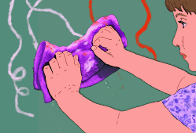

"Dry me," said gargoyle one.
"Dry me," said gargoyle one.
"No, me first," said the other one.
Wendy didn't scream because the directions said they'd be real cranky. "Okay, I'll dry you both." Wendy dried them off with towels.
Wendy named one Lester and the other one Tina, because one of them was a boy and the other one was a girl. When Wendy was off at school, they'd get into pillow fights and make her room a mess.
"You have to clean up your room," Mrs. Delane said. "Your Dad almost fainted when he saw your room."
"But Lester and Tina made the mess."
"They're your gargoyles and you have to clean up after them."
 Wendy gave them crayons to draw with, but they ended up drawing all over the walls and it took Wendy hours to clean the walls.